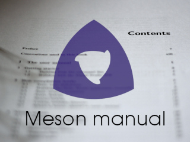

Price: 29.95€ plus country dependent tax.
Only available as a PDF download.
A valid email address is required to receive the download
link.
Not available for purchase in some countries. See below for
details.
Sales and download service provided by
SendOwl.

Book details
Author: Jussi Pakkanen
ISBN: 978-952-94-2892-2
Language: English
Number of pages:
299
Published by: Diffraction Labs
Year of publication: 2020
The Meson Manual is a full user's manual for the Meson build system written by Jussi Pakkanen, the original creator and current project lead of Meson. Written in an informative and concise no-nonsense style, the text makes the material easily approachable even for people with little previous knowledge on build systems in general or Meson in particular. Plenty of practical examples are used to ensure that the information is readily usable on real world projects.
The book starts with the basics such as how compilers and linkers work, what is the difference between static and dynamic linking (both at compile time and at runtime) and some differences between different toolchains and operating systems. This is followed by a thorough description of Meson's syntax, behaviour and functionality. A few bigger projects are examined to see how all of this can be applied to real world projects. The second half of the book is a thorough reference manual of all Meson functionality, including sample code for almost every function, module and method.
Review copies
If you are a journalist and wish to write a review of the book for a publication, send an email to the author to get a free review copy.
Sample chapter
Want to know more before buying? No problem, here is an entire sample chapter for you to read. It contains the exact same text as the actual book.
Updated editions
When you buy the book you also get all future updates at no extra cost.
Note that this is not a guarantee that any updates will be made. But if they are, purchasers get download the new versions for free.
Availability
This book is only available for purchase on this web site as a downloadable PDF.
While we would love to make this book available to all countries in the world, it is not possible due to reasons beyond our control. Several countries have laws stating that anyone selling any goods to that country must register in, collect and pay taxes and deal with all related bureaucracy of the country in question. This is an unreasonable burden on small independent publishers, so unfortunately purchases from these countries have been blocked.
Blocked countries include, but are not limited to, Russia, India, UAE and South Korea.
Table of contents
Part I
- Getting started
- How compilation works
- Meson syntax
- Building blocks of a software project
- External dependencies
- Subprojects and internal dependencies
- Configuring the project
- Testing
- Installing
- Project options
- Custom build steps
- Cross compilation
- The Wrap dependency download mechanism
- A library sample project
Part II
- Elementary object reference
- Domain specific object reference
- Function reference
- Module reference
Part III
- Contributing to Meson